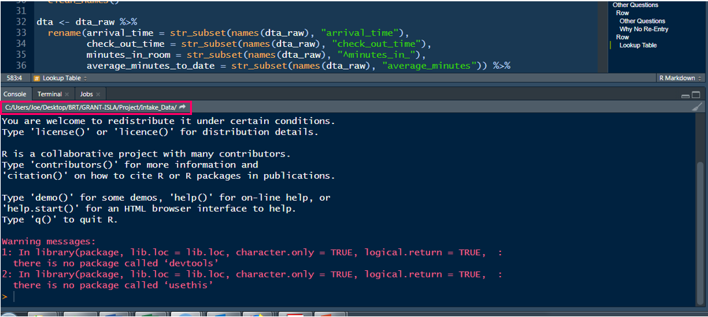

# In the console:
# install.packages("here")
# Then, load the package
library(here)Week 2: Workflow
.R & .qmd, Projects, Read Data
Housekeeping
Let’s give Aden a hex sticker!

. . .

Housekeeping
- Slides as pdf
- Screenshots
- Something to show you completed the Codecademy lesson in its entirety
- Only responsible for the free Lessons

Workflow
Week 2
Agenda
- Project Oriented Workflow
- RStudio Projects
- File paths
- Reading in data
- Scripts (.R & .qmd)
- Loading packages
- Looking at data
- The pipe
%>%- also
|>
- also
Learning Objectives
- Open an RStudio Project
- Understand file paths
- Learn two ways to read data
- Establish good workflow habits
RStudio Projects
RStudio Projects (.Rproj)
An RStudio project - .Rproj - is basically a folder to house all the files for your project
- scripts
- products
- data
- figures
RStudio Projects (.Rproj)
Advantages
- Work with several projects at the same time (several projects open)
- these are self-contained!
- Can save the history of your commands after quitting
- Can specify version control system (e.g., Git)
- Previously edited code tabs are restored upon opening
- The current working directory is set to the project directory
What’s a working directory?
Where you’re at on your computer
- the folder location
- Quick check-in: does this make sense?
. . .
You can change your working directory with setwd("path/to/files")…
…BUT I strongly urge you to avoid that
. . .
Instead, we’re going to use RStudio Projects and the {here} package
. . .
- See where you’re currently at by looking at the top of the console
- Or run
getwd()in the console

What’s different with .Rproj?
Your working directory is immediately wherever your .Rproj project is located
This is true for whoever is accessing the project
Use the {here} package to specify paths
- You can read/save data (and figures, products, etc.) which we’ll talk about more later
Best practices
here()
- works for anyone who uses the script
- share it out with no code editing
- easy to work on other projects with different directories
Session > Restart R (Ctrl/Command + Shift + F10)
Restart the R session
- Create a fresh
Rprocess - Deletes all objects
- Packages will need to be re-loaded
- Resets any code-enables options
- Ensures script is self-contained
Project Oriented Workflow
Write every script assuming it will be run in a fresh R process
. . .
- Do not save
.RDatawhen you quitRand don’t load.RDatawhen you startR
Week 1: Tools 🡆 Global Options 🡆 General
Workspace
- “Restore .RData into workspace at startup” – Uncheck
- “Save workspace to .RData on exit:” – Never
. . .
- Daily work habit:
- Restart
Rvery often and re-run your developing script from the top - Use the RStudio menu item: Session > Restart R (
Ctrl/Command + Shift + F10)
Workflow
Let’s start by making a new project
Typical workflow
Make a new .RProj
Add folders
- “data”
- “scripts”
Read in data
Create scripts
Load packages
RStudio Project
1. Make a new .RProj
File > New Project…
or - upper right of RStudio by the R cube
⬇️ > New Project…
1. Make a new .RProj
Let’s name it: “my_first_project”
- notice the naming convention
- no caps
- no spaces
- no special characters (e.g.,
?,!,",#) - “
_” and “-” are ok
. . .
Choose a location for it
- An .RProj will need its own folder, with no other projects in it!
- Projects in Dropbox often lead to unexpected occurences
. . .
I’ll just save “my_first_project” to my desktop
demo
Organize
2. Create folders
Let’s make two folder in different ways (either is fine)
data
- where we will store all our project-related data
- let’s create that in Rstudio
scripts
- where we will hold all our scripts (.R or .Rmd or .qmd files)
- let’s create that in the folder on our machine
demo
Reading Data
Dowload data
Let’s save the following data files into our project “data” folder
(go here to download)
- ecls-k_samp.sav
- Fatality.txt
- Project_Reads_Scores.csv
Let’s see files are in our “data” folder
- You can
list.files("path/to/files")to see the contents of your project directory (i.e., what your computer “sees”)list.files(here("data"))
- You can also use the Files tab in RStudio
. . .
- Use
here()to access data or any file in your project
. . .
here()is simply a function to print a path
. . .
demo
Reading data into R
You just need two things:
- where the data is located
This is most often just a path on you machine
. . .
package::function()to read the data
We’ll be talking about two data reading packages
{rio}{readr}
We’ll use the {here} package 
{here} uses the top-level directory of a project to easily build paths to files
- Allows you to worry about paths a little less
- Helps reproducibility
- Your final project!
Think of here() simply as a function to print a path name
A path can be the location of your data
Art: Allison Horst
. . .
path = location
{here}
Think of here() simply as a function to print a path name
First, install/load the package
{here}
Think of here() simply as a function to print a path name
Run this code in your project (console is fine)
here()[1] "C:/Users/jnese/Desktop/BRT/Teaching/1_Intro-Data-Science/intro-DS-R_fall-2024". . .
This is the “top level” directory of my project
{here}
Think of here() simply as a function to print a path
Run this code in your project (console is fine)
here()[1] "C:/Users/jnese/Desktop/BRT/Teaching/1_Intro-Data-Science/intro-DS-R_fall-2024"This is the path to the project directory
. . .
here("data"). . .
[1] "C:/Users/jnese/Desktop/BRT/Teaching/1_Intro-Data-Science/intro-DS-R_fall-2024/data"This is the path to the “data” folder in our project directory
{here}
Think of here() simply as a function to print a path
here()[1] "C:/Users/jnese/Desktop/BRT/Teaching/1_Intro-Data-Science/intro-DS-R_fall-2024"here("data")[1] "C:/Users/jnese/Desktop/BRT/Teaching/1_Intro-Data-Science/intro-DS-R_fall-2024/data"Question: What was the difference in the output between these?
. . .
Question: What will the following produce?
here("data", "ecls-k_samp.sav"). . .
[1] "C:/Users/jnese/Desktop/BRT/Teaching/1_Intro-Data-Science/intro-DS-R_fall-2024/data/ecls-k_samp.sav"Reading Data
{rio}
{rio}is a wrapper around many different packages that import/export data in different formatsGreat package
Most of the time “it just works” regardless of the source file type
- this might not impress you, but it really should!
- any package that turns a complex task into a simple procedure that “just works” is invaluable
rio::import()`
import(file, format, setclass, …)
file = character string naming a file
. . .
format = (optional) character string of file format; e.g., "," for comma-separated values
setclass = (optional) character vector specifying one or more classes to set on the import. Default is "data.frame". We would probably prefer "tbl_df" for a tibble
3a. Read in data
Try it!
library(rio)
#library(tidyverse)
# .sav
eclsk <- import(here("data", "ecls-k_samp.sav"), setclass = "tbl_df")
# Use `as_tibble` instead of `setclass = "tbl_df"`
# .txt
fatality <- import(here("data", "Fatality.txt")) %>%
as_tibble()
#.csv
exam1 <- import(here("data", "Project_Reads_Scores.csv")) %>%
as_tibble()You can even read directly from the web 😲
Fatality.txt
import("https://raw.githubusercontent.com/jnese/intro-DS-R_fall-2024/master/data/Fatality.txt",
setclass = "tbl_df")# A tibble: 336 × 10
state year mrall beertax mlda jaild comserd vmiles unrate perinc
<int> <int> <dbl> <dbl> <dbl> <chr> <chr> <dbl> <dbl> <dbl>
1 1 1982 2.13 1.54 19 no no 7.23 14.4 10544.
2 1 1983 2.35 1.79 19 no no 7.84 13.7 10733.
3 1 1984 2.34 1.71 19 no no 8.26 11.1 11109.
4 1 1985 2.19 1.65 19.7 no no 8.73 8.90 11333.
5 1 1986 2.67 1.61 21 no no 8.95 9.80 11662.
6 1 1987 2.72 1.56 21 no no 9.17 7.80 11944
7 1 1988 2.49 1.50 21 no no 9.67 7.20 12369.
8 4 1982 2.50 0.215 19 yes yes 6.81 9.90 12309.
9 4 1983 2.27 0.206 19 yes yes 6.59 9.10 12694.
10 4 1984 2.83 0.297 19 yes yes 6.71 5 13266.
# ℹ 326 more rowsWrite data
Save data just as easily with rio::export()
. . .
You need two things:
- What to export?
- Where to export?
. . .
export(x, file, format, …)
x = data frame (tibble) to be written into a file
file = character string naming a file
. . .
export(fatality, here("data", "exam1.sav"))
export(fatality, here("data", "exam1.txt"))
export(fatality, here("data", "exam1.dta"))convert()
Another really useful feature is convert(), which just takes a file of one type and converts it to another
Say your advisor uses SPSS 😐, but their colleague uses Stata 😐, and you use R 😎
Just run one line of code!
. . .
convert(in_file, out_file, …)
. . .
in_file = character string naming an input file
. . .
out_file = character string naming an output file
. . .
convert(here(“data”, ecls-k_samp.sav), (here(“data”, ecls-k_samp.txt)))
How is this all working?
{rio} wraps a variety of faster, more modernized packages than those provided by base R
{data.table}for delimited formats{readxl}and{openxlsx}for reading and writing Excel workbooksdata.table::fread()for text-delimited files to automatically determine the file format regardless of the extension- also very fast
. . .
Again, import() “just works”
Maintaining data “labels”
Question: How many of you or your colleagues use SPSS or Stata?
. . .
In SPSS and Stata numeric data are often encoded with labels
For SAS, Stata, and SPSS files use {haven}
{haven} allow you to transform the data into the character/factor version
{haven} store metadata from rich file formats (SPSS, Stata, etc.) in variable-level attributes in a consistent form regardless of file type or underlying import function
. . .
rio::characterize()converts a single variable or all variables in the data that have label attributes into character vectorsrio::factorize()does the same but returns factor variables
. . .
This is important for several of your homeworks!
eclsk %>%
select(child_id, k_type:sex) %>%
head()# A tibble: 6 × 4
child_id k_type school_type sex
<chr> <dbl> <dbl> <dbl>
1 0842021C 1 0 0
2 0905002C 1 1 0
3 0150012C 1 1 1
4 0556009C 1 1 1
5 0089013C 1 0 0
6 1217001C 0 0 1# A tibble: 6 × 4
child_id k_type school_type sex
<chr> <chr> <chr> <chr>
1 0842021C full-day public male
2 0905002C full-day private male
3 0150012C full-day private female
4 0556009C full-day private female
5 0089013C full-day public male
6 1217001C half-day public female{readr}
- Great package; most of the time “it just works” regardless of the source file type
- Loads with
{tidyverse} - Default loads data as a
tibble- this is nice!
. . .
read_csv(): comma separated (CSV) filesread_tsv(): tab separated filesread_delim(): general delimited filesread_fwf(): fixed width filesread_table(): tabular files where columns are separated by white-spaceread_log(): web log files
read_csv()
You just need one thing:
- where the data is located
read_csv(file, …)
file = a path to a file, a connection, or literal data (either a single string or a raw vector)
. . .
And how do we get a path string?
. . .
with the here() function
read_csv(here("path", "to", "data.csv"))3b. Read in data
Try it!
library(tidyverse)
# read_table() for space separated data
fatality <- read_table(here("data", "Fatality.txt"))
#read_csv(), the one I most often use
exam1 <- read_csv(here("data", "Project_Reads_Scores.csv"))
# read directly from the web, in this case a .csv
web <- read_csv("https://github.com/datalorax/ncme_18/raw/master/data/pubschls.csv")write_*()
Save data just as easily with write_*()
You need two things:
- What to export?
- Where to export?
. . .
write_csv(x, file, …)
x = data frame (tibble) to be written into a file
file = character string naming a file to write to
. . .
Basically
write_*(what, "where")
write_csv(exam1, here("data", "exam1.csv"))Scripts
.R
.R is R script (code) file
File > New File > R Script
- Everything is code
- Text - comments! - need to begin with “
#”- Comments are a great habit!
- Use them to document the what & why of your code
Run code
Ctrl/Command + Enter- Highlight specific code,
Ctrl/Command + Enter - Put mouse on line,
Ctrl/Command + Enter, and it will execute the all connected (piped) code
demo
Quick Peek
What is Quarto?
- an open-source scientific and technical publishing system
- create dynamic content with Python, R, Julia, and Observable.
- publish reproducible, production quality articles, presentations, websites, blogs, and books in HTML, PDF, MS Word, ePub, etc.
- include equations, citations, crossrefs, figure panels, callouts, advanced layout, etc.
- a multi-language, next generation version of R Markdown (from Posit)
- includes many built in output formats (and options for customizing each)
- has native features for special project types like Websites, Books, and Blogs (rather than relying on external packages)
Why Quarto?
- Reproducibility: reproducible workflow
- Code + output + prose together
- Syntax highlighting FTW!
- Familiar-feeling authoring with the visual editor without having to learn a bunch of new markdown syntax
- Efficiency: consistent formatting
- Extendability: Use with Python, and Julia, and Observable, and more
.qmd
.qmd is a document format file that combines code AND prose
- File > New File > Quarto document…
. . .
Code goes into “code chunks”
```{r}
#| eval: false
# comment
data %>%
select(id, read, math)
```. . .
Prose goes outside the code chunks
. . .
demo
.R & .qmd
- Both are great
- Serve different purposes
. . .
Organization tip
- .qmd with headers
- .R with
# Header ----
demo
Packages
Packages
. . .
First the package must be installed on your machine
install.packages(“package_name”)
. . .
- you will only need to do this the first time you want to use the package
- never keep this code line (just run it in the console!)
- notices the quotes around the package name
- never keep this code line
. . .
Any time you want to use a package it should be loaded
library(package_name)
. . .
- you will do this each time you use the package in your scripts
- notices no quotes around the package name
{janitor} 
A fantastic package!
remove_empty_rows()remove_empty_cols()excel_numeric_to_date()- changes numeric dates imported from Excel to actual dates
tabyl()- frequency table with n and %
. . .
clean_names()- styles column names (NOT data itself) with “snake_case”: lower case and underscore between words
- can choose other “
*_case”
Let’s put it all together
New script
Let’s work within the “my_first_project” .RProj
- Open a new Quarto document
demo
New script
Let’s work within the “my_first_project” .RProj
- Clean it up
- Modify the YAML
- Save the file as “practice.qmd” in the scripts folder
- Render!
demo
New script
- Opens with a template
- Going forward with .qmd…
- you can delete everything in the template, or
- you can open an empty .qmd document
but do one of these
Working with data
- What packages will we use?
library(here)- where the data is locatedlibrary(rio)- read the data intoRlibrary(janitor)- clean the variable names in the datalibrary(tidyverse)- clean the data
Working with data
- Read in the Penguins.csv data
- Let’s name the data “penguins”
- Three options, choose one
# rio::import()
penguins <- import(here("data", "Penguins.csv"), setclass = "tbl_df")
penguins <- import(here("data", "Penguins.csv"))
# readr::read_csv()
penguins <- read_csv(here("data", "Penguins.csv")) Note that this data is taken from the {palmerpenguins} package but has slight modifications
What do our data look like?
penguins# A tibble: 344 × 8
Species Island `Bill Length (mm)` `Bill Depth (mm)` `Flipper Length (mm)`
<chr> <chr> <dbl> <dbl> <dbl>
1 Adelie Torgersen 39.1 18.7 181
2 Adelie Torgersen 39.5 17.4 186
3 Adelie Torgersen 40.3 18 195
4 Adelie Torgersen NA NA NA
5 Adelie Torgersen 36.7 19.3 193
6 Adelie Torgersen 39.3 20.6 190
7 Adelie Torgersen 38.9 17.8 181
8 Adelie Torgersen 39.2 19.6 195
9 Adelie Torgersen 34.1 18.1 193
10 Adelie Torgersen 42 20.2 190
# ℹ 334 more rows
# ℹ 3 more variables: `Body Mass (g)` <dbl>, Sex <chr>, Year <dbl>. . .
Or use View() to take a look at the full data in RStudio
View(penguins)or click on the object name in your RStudio Environment
janitor::clean_names()
# re-assign the "reads" object by reading the data in again
penguins <- read_csv(here("data", "Penguins.csv")) %>%
clean_names()
# or just work with the existing "penguins" object
penguins <- penguins %>%
clean_names()
Looking at the data structure
structure
str(penguins)spc_tbl_ [344 × 8] (S3: spec_tbl_df/tbl_df/tbl/data.frame)
$ species : chr [1:344] "Adelie" "Adelie" "Adelie" "Adelie" ...
$ island : chr [1:344] "Torgersen" "Torgersen" "Torgersen" "Torgersen" ...
$ bill_length_mm : num [1:344] 39.1 39.5 40.3 NA 36.7 39.3 38.9 39.2 34.1 42 ...
$ bill_depth_mm : num [1:344] 18.7 17.4 18 NA 19.3 20.6 17.8 19.6 18.1 20.2 ...
$ flipper_length_mm: num [1:344] 181 186 195 NA 193 190 181 195 193 190 ...
$ body_mass_g : num [1:344] 3750 3800 3250 NA 3450 ...
$ sex : chr [1:344] "male" "female" "female" NA ...
$ year : num [1:344] 2007 2007 2007 2007 2007 ...
- attr(*, "spec")=
.. cols(
.. Species = col_character(),
.. Island = col_character(),
.. `Bill Length (mm)` = col_double(),
.. `Bill Depth (mm)` = col_double(),
.. `Flipper Length (mm)` = col_double(),
.. `Body Mass (g)` = col_double(),
.. Sex = col_character(),
.. Year = col_double()
.. )
- attr(*, "problems")=<externalptr> Looking at the data properties
dimensions (rows \(\times\) columns)
dim(penguins)[1] 344 8. . .
number of rows or number of columns
nrow(penguins)[1] 344ncol(penguins)[1] 8head()
View the six first elements
# first six rows
head(penguins)# A tibble: 6 × 8
species island bill_length_mm bill_depth_mm flipper_length_mm body_mass_g
<chr> <chr> <dbl> <dbl> <dbl> <dbl>
1 Adelie Torgersen 39.1 18.7 181 3750
2 Adelie Torgersen 39.5 17.4 186 3800
3 Adelie Torgersen 40.3 18 195 3250
4 Adelie Torgersen NA NA NA NA
5 Adelie Torgersen 36.7 19.3 193 3450
6 Adelie Torgersen 39.3 20.6 190 3650
# ℹ 2 more variables: sex <chr>, year <dbl>. . .
# first six elements of the column
head(penguins$flipper_length_mm)[1] 181 186 195 NA 193 190Another cool package {skimr}
library(skimr)
skim(penguins)| Name | penguins |
| Number of rows | 344 |
| Number of columns | 8 |
| _______________________ | |
| Column type frequency: | |
| character | 3 |
| numeric | 5 |
| ________________________ | |
| Group variables | None |
Variable type: character
| skim_variable | n_missing | complete_rate | min | max | empty | n_unique | whitespace |
|---|---|---|---|---|---|---|---|
| species | 0 | 1.00 | 6 | 9 | 0 | 3 | 0 |
| island | 0 | 1.00 | 5 | 9 | 0 | 3 | 0 |
| sex | 11 | 0.97 | 4 | 6 | 0 | 2 | 0 |
Variable type: numeric
| skim_variable | n_missing | complete_rate | mean | sd | p0 | p25 | p50 | p75 | p100 | hist |
|---|---|---|---|---|---|---|---|---|---|---|
| bill_length_mm | 2 | 0.99 | 43.92 | 5.46 | 32.1 | 39.23 | 44.45 | 48.5 | 59.6 | ▃▇▇▆▁ |
| bill_depth_mm | 2 | 0.99 | 17.15 | 1.97 | 13.1 | 15.60 | 17.30 | 18.7 | 21.5 | ▅▅▇▇▂ |
| flipper_length_mm | 2 | 0.99 | 200.92 | 14.06 | 172.0 | 190.00 | 197.00 | 213.0 | 231.0 | ▂▇▃▅▂ |
| body_mass_g | 2 | 0.99 | 4201.75 | 801.95 | 2700.0 | 3550.00 | 4050.00 | 4750.0 | 6300.0 | ▃▇▆▃▂ |
| year | 0 | 1.00 | 2008.03 | 0.82 | 2007.0 | 2007.00 | 2008.00 | 2009.0 | 2009.0 | ▇▁▇▁▇ |
The pipe operator (%>%)
- The
%>%operator (Super + Shift + M)- inserts the input as the first argument in the next function
- To start, you can read it as “then”
- It is crucial for work in the
{tidyverse}
. . .
With the {tidyverse}
penguins %>%
count(species)# A tibble: 3 × 2
species n
<chr> <int>
1 Adelie 152
2 Chinstrap 68
3 Gentoo 124Or with {janitor}
penguins %>%
tabyl(species) species n percent
Adelie 152 0.4418605
Chinstrap 68 0.1976744
Gentoo 124 0.3604651. . .
Let’s look at ?count and ?tabyl
Why use %>%
Chaining arguments is efficient and easy to read
. . .
penguins %>%
filter(species == "Adelie",
bill_length_mm > 40) %>%
select(island, bill_length_mm, body_mass_g) %>%
arrange(bill_length_mm) # A tibble: 51 × 3
island bill_length_mm body_mass_g
<chr> <dbl> <dbl>
1 Biscoe 40.1 4300
2 Torgersen 40.2 3450
3 Dream 40.2 3975
4 Dream 40.2 3400
5 Torgersen 40.3 3250
6 Dream 40.3 4350
7 Biscoe 40.5 3200
8 Biscoe 40.5 3950
9 Biscoe 40.6 3550
10 Biscoe 40.6 3800
# ℹ 41 more rowsWhy use %>%
Chaining arguments is efficient and easy to read
penguins %>%
filter(species == "Adelie",
bill_length_mm > 40) %>%
select(island, bill_length_mm, body_mass_g) %>%
arrange(bill_length_mm) . . .
Equivalent to:
arrange(select(filter(penguins, species == "Adelie", bill_length_mm > 40), island, bill_length_mm, body_mass_g), bill_length_mm)%>%
The %>% works so well in the {tidyverse} because the first argument in (nearly) all functions is the dataframe (tibble)
So you don’t need to name the data each time
. . .
So this:
penguins %>%
count(sex)# A tibble: 3 × 2
sex n
<chr> <int>
1 female 165
2 male 168
3 <NA> 11Is equivalent to this:
count(penguins, sex)# A tibble: 3 × 2
sex n
<chr> <int>
1 female 165
2 male 168
3 <NA> 11Next time
Homework notes
Script on website
- Download Homework 1 from the course Assignments page
- Work with this .qmd file
Submit a rendered .html file to Canvas
- Assignments > Homeworks > HW 1
Before next class
- Reading
- Supplemental Learning
- Homework
- Homework 1
- Final project
- Finalize Groups